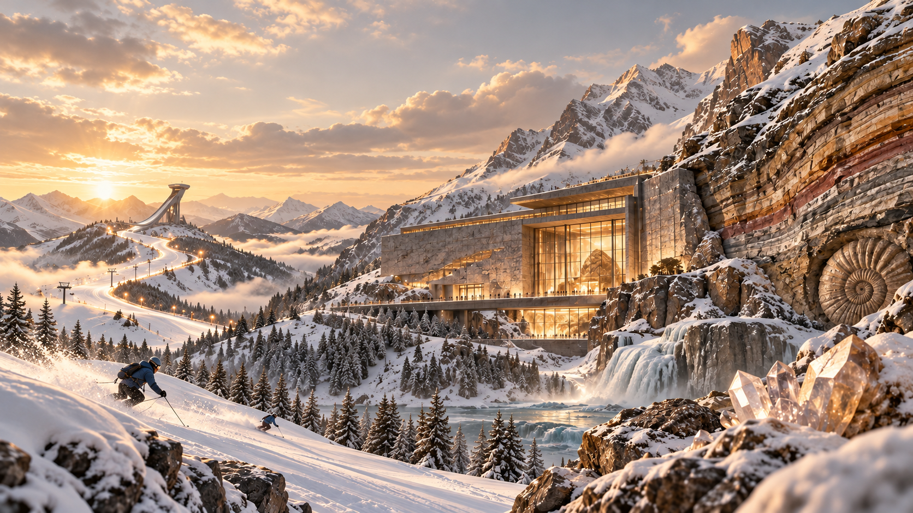

← → 切换点位 · Esc 关闭详情

开馆序言
当冰雪成为名片，山河还藏着什么？
把山川当作展厅，把地名当作线索。沿着峡谷、湖盆、温泉与河谷，读懂自然如何塑造风景，也读懂一座城市如何与大地共同生长。
01 从雪道，看向山河02 从地表，走向岩体03 从资源，读懂城市
第一展厅 / 在地图上读懂山河与城市
山河与城市 · 总览展区
点击地图按钮，查看图件与讲解22 个资源与产业点位。查看旅游资源、升级潜力与产业联系，点击编号或地名，打开图件并聆听讲解。
旅游资源 T升级潜力 P产业集群 D产业链 E
点击编号查看总览详情 · 小屏可横向滑动
第二展厅 / 从地表景观走向地下岩体
地貌与岩体 · 三维展区
点击地图按钮，查看图件与讲解15 个区域三维图件。点击地图标签或右侧地名，查看地貌与地下岩体分解示意图，聆听对应讲解。
旅游资源 T升级潜力 P产业集群 D产业链 E
点击区域标签查看三维图件 · 小屏可横向滑动
第三展厅 / 山河有藏，等你发现
六扇展窗，重新认识张家口
从冰雪山地到峡谷草甸，从温泉谷地到河谷遗址。点击一张展卡，走近风景背后的大地。